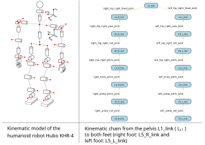

2.2. Robot Descriptions with ROS2
The purpose of a robot description is to have a model that serves both simulation and control of the robot:
visualize the robot and its geometric configurations,
calculate the position of the robot’s segments based on the joints,
interact with the robot in a simulation environment and retrieve sensor data, collision data, position, velocity, acceleration, and force information (among others on the joints and segments of the robot),
Robot descriptions are made in robot description files. We will use two XML formats in ROS: URDF and SDF.
These files mainly describe the following parameters:
the robot’s segments:
for visualization
geometry (
<geometry>),origin (position and orientation of a frame different from the segment’s origin frame)
material (mainly color)
for collision calculation
geometry (
<geometry>), often simplified geometry to speed up calculations,origin (position and orientation of a frame different from the segment’s origin frame)
inertia parameters
mass,
center of inertia (center of gravity),
the joints between connected pairs of segments,
name
type (prismatic, revolute, fixed, etc.)
parent and child (the two connected segments)
origin (the transformation between the two segments before any movement is applied)
motion limits (position, velocity, acceleration, force limits, etc.)
axis of motion
2.2.1. Kinematic Chains
The transition from the frame of one segment to another following the transformation applied by the joint connecting the two segments constitutes the elementary kinematic transformation of the robot’s kinematic chain.

Figure 2.5 Kinematic chain tree of the legs of the Hubo KHR-4 robot, a non-parallel humanoid robot, (source: [APL10] .)
The first segment of the kinematic chain is called the root of the kinematic chain.
The root of the kinematic chain is a fixed segment relative to the modeling frame, often called the world frame. The direction of the arrows indicates which frame is the reference for the position and orientation of the next segment. In the description parameters above, the arrow goes from the child to the parent.